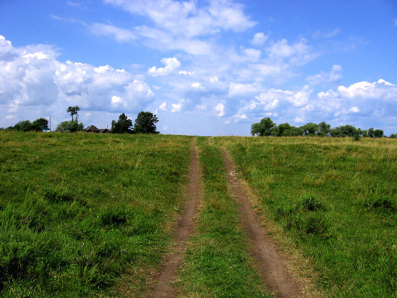

Не позволяй душе лениться

Не позволяй душе лениться!
Чтоб в ступе воду не толочь,
Душа обязана трудиться
И день и ночь, и день и ночь!
Гони её от дома к дому,
Тащи с этапа на этап,
По пустырю, по бурелому
Черех сугроб, через ухаб!
Не разрешай ей спать в постели
При свете утренней звезды,
Держи лентяйку в чёрном теле
И не снимай с неё узды!
В.Заболоцкий